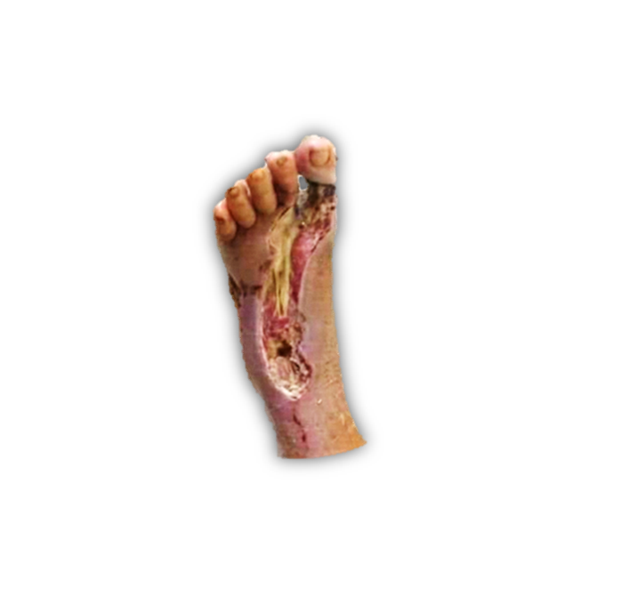
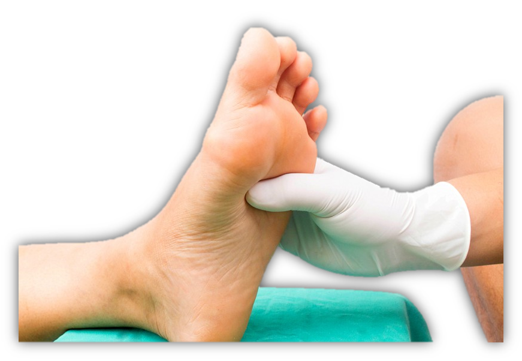

No More!
Pie diabetico
Es una alteración de base etiopatogénica neuropática inducida por la hiperglucemia sostenida, con o sin coexistencia de isquemia y previo desencadenante traumático, se produce una lesión o ulceración del pie.
¿Que produce el pie diabetico?
 Las Bacterias resistentes
La presencia de biopeliculas en las heridas es una causa primoridal del restraso de la cicatrizacion ya que protegen a los microorganismos del ataque celular y quimico.
La isquemia
Las condiciones que reducen el flujo sanguineo y la oxigenacion son causas comunes de la mala cicatrizacion de heridas.
el Tabaquismo, la obesidad, la diabetes y la hipertension producen isquemia
Infeccion en la herida
Una presión excesiva o un trauma repetido en la herida retrasaran la cicatrización.
La deshidratación hace que las células se sequen y se formen costras, mientras que la sobre hidratación por exposición a la orina o las heces,
por ejemplo, hace que la piel se infecte, se humedezca y se erosione. Se debe eliminar el tejido necrótico (mediante amputación de los miembros)
o la herida no sanara.
La Cronicidad
Los pacientes de edad avanzada se curan más lentamente que los adultos sanos.
Su piel es frágil y su riesgo de infección es mayor debido a una respuesta inflamatoria más lenta, una producción de anticuerpos disminuida
y una función del sistema endocrino más lenta. Además, es más probable que tengan enfermedades crónicas como diabetes y enfermedades del
corazón que perjudican la circulación y la oxigenación.
Factores del Pie diabetico
Generales
- Mal control glucémico, hemoglobina glucosilada >7%
- Tabaquismo
- Sedentarismo
- Tiempo de evolución de la diabetes >5 años
- Enfermedad vascular periférica
- Ceguera o deterioro visual
- Neuropatía periférica
- Enfermedad renal crónica
- Edad>40 años
Locales
- Deformidad del pie
- Trauma y uso de zapatos inapropiados
- Hiperqueratosis (callos)
- Historia previa de ulceración o amputación
- Presión elevada o prolongada del pie
- Movilidad articular limitada
¿Como puedo prevenir el pie diabetico?

Promover un estilo de vida saludable, establecer un programa de monitoreo y atención del pie del paciente asegura éxito a los dos años para evitar una amputación mayor a los dos años. Revisión del pie por parte del especialista al menos una vez por año. Importante usar el calzado adecuado el paciente diabético debe de hacer por lo menos 150 min de actividad física. Es importante que el paciente relize actividad fisica por lo menos 3 veces a la semana. En el caso de pacientes de alto riesgo la evaluación debe de ser al menos una vez cada tres meses.

Si tienes estos padecimientos no esperes! y mitiga el sufrimiento causado por el pie diabetico y heridas dificiles de sanar, evita consecuencias extremas como las amputaciones de tus miembros.
Confia en soluciones verdaderamente efectivas y di No Mas! al dolor.
No More! te recomienda su crema de polifenoles Bioactivos aplicacion para cuerpo Comprala ahora dando clic aqui
Donde Comprar?
No te quedes sin la oprtunidad de adquirir soluciones verdaderamente efectivas para el cuidado de tu piel
adquiere tu producto ya
Con gusto te atenderemos!llama al siguiente numero, o mandanos un mensaje por whatsapp.
8718864426